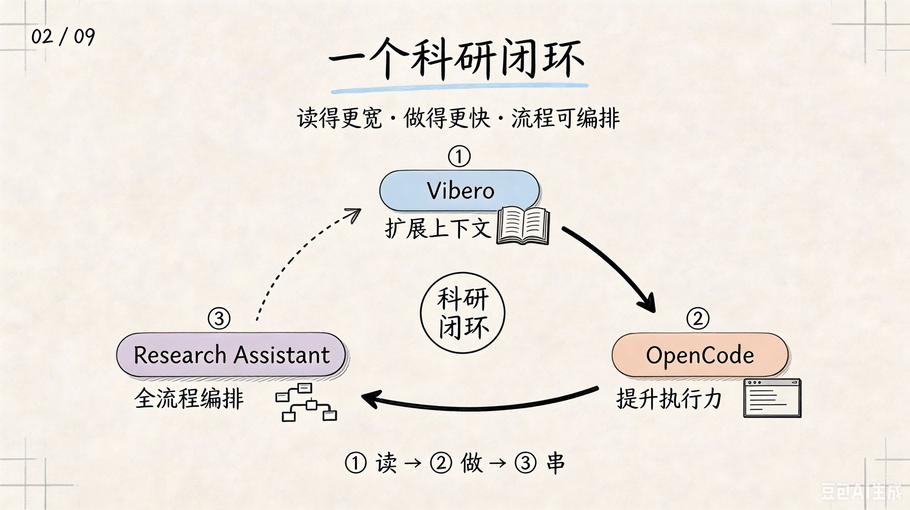
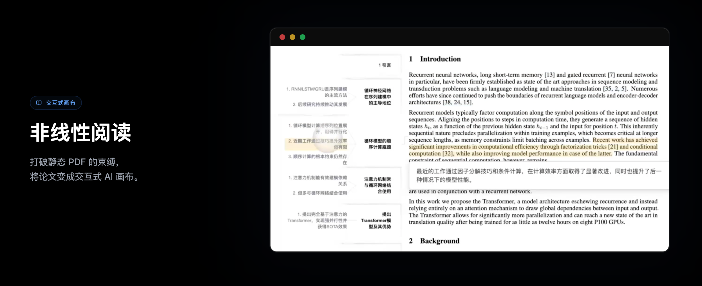
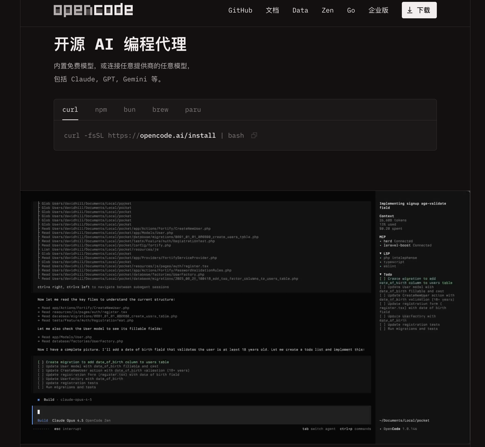
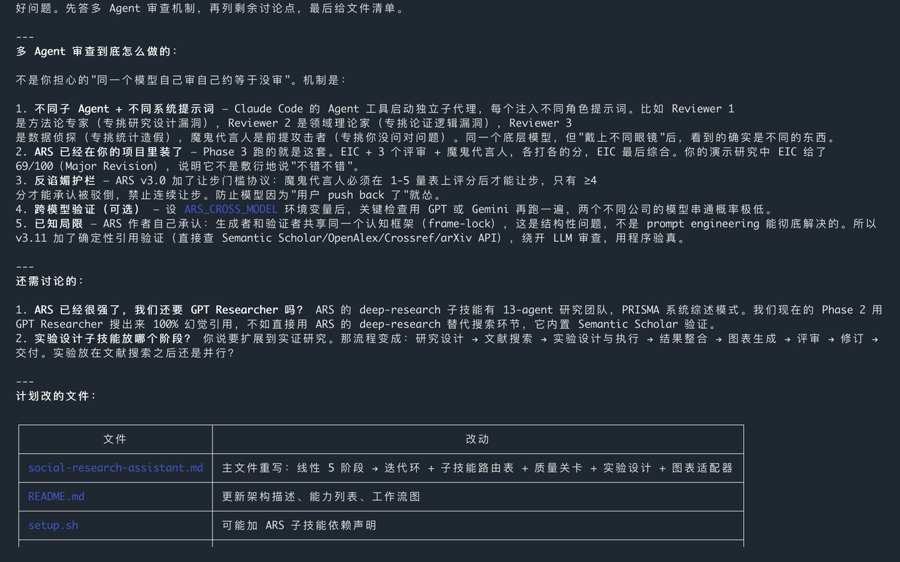
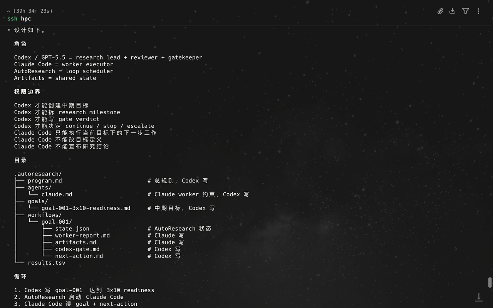

How to do Research
扩展上下文 · 提升执行力 · 流程可编排
汇报人：丁鹏德 学号：20251402002

Meet the AI for vibe reading · 更快，也更深
非线性阅读 · 先见森林，再见树木

示例：Attention Is All You Need（Transformer）
开源 AI 编程 Agent

Demo
科研全流程 Skill · 装进 OpenCode，闭环就齐了
设计 → 文献 → 结构 → 评审 → 交付
带质量门禁，不过关不往下走

读得更宽 · 做得更快 · 流程可编排
想法在你 · 工序可自动化
读 · 扩展上下文
做 · 提升执行力
串 · 全流程编排
= 科研闭环
Q & A
彩蛋
全自动化科研 — 进阶方向
前面是日常可用的闭环：读、做、串。
Auto Research 是更远的一步——把整条科研管线交给 Agent 自动跑通，人留在问题与判断上。
